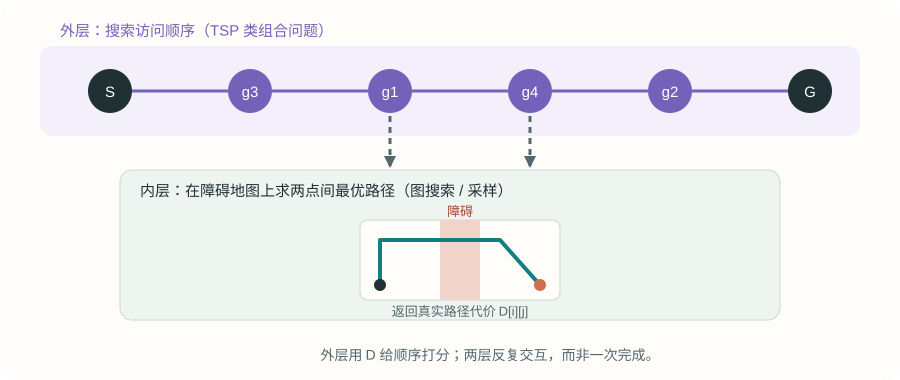
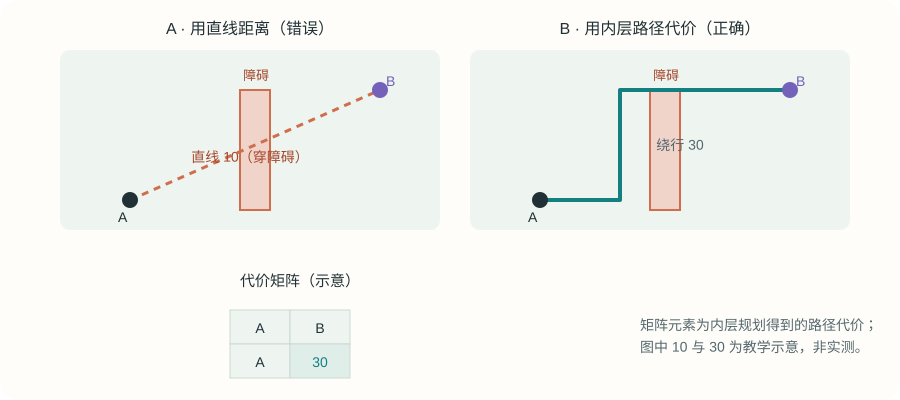
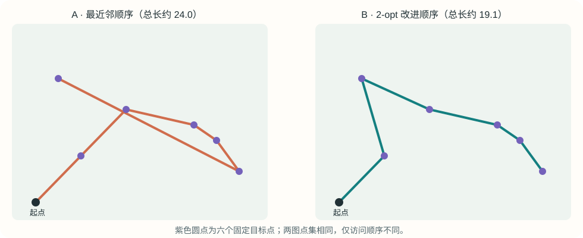

多目标路径规划：顺序为什么往往比走法更重要？
巡检 20 个仪表、测绘一片区域、一次配送多个包裹——这些问题不止一个终点，而是“依次访问一批目标”。本章把问题拆成外层访问顺序与内层两点路径两层，讲清最近邻、2-opt、遗传算法的取舍，并给出可验证的最优性对比。
从一个终点到多个目标
前面各章的问题都是一对一：给定起点与终点，找一条最短路径。但很多真实任务不是这样：机器人要依次查看一组仪表盘、无人机要扫过区域内每个角落、配送车要在一趟内送完多个站点。共同特征是目标不止一个，而且要决定“先访谁、后访谁”。这就是多目标路径规划。
按目标的性质，可以分成三类：
- 巡检（inspection）——必须经过一组指定的检查点，目标是在覆盖全部检查点的前提下总代价最小；
- 覆盖（coverage）——要扫过区域内每个可达位置，目标是覆盖率最高、重复率最低（扫地机器人、植保无人机）；
- 配送（delivery）——在一批站点间配送，常带有时间窗、载量等约束。
巡检型问题的一个干净抽象是：给定起点与 n 个目标点，找一条经过全部目标点、总路径长度最短的路线。这正是旅行商问题（TSP）的变体：经典 TSP 要求回到起点形成一个回路，而路径规划版本有明确的起、终点，且两点间的代价由内层路径规划决定，而不是直线距离。
与第 2 章的状态空间一样，这里的“顺序”本身就是一个组合对象。若目标数为 n，可能的访问顺序有：
当 n=10 时约 362 万，n=20 时约 2.43×1018——这就是为什么枚举所有顺序不可行，TSP 是 NP-hard 的。
顺序决定一切
多目标路径规划通常是一个双层优化：
- 外层：决定访问顺序，这是一个 TSP 类的组合问题；
- 内层：给定两个目标点，计算它们之间的一条最优路径（第 6–10 章的图搜索、第 11–13 章的采样方法都可以用在这里）。
关键点是两层会耦合：内层的代价取决于地图上的障碍，不是固定的直线距离。因此外层不能用“先排顺序再连线”的方式，而必须先知道每对目标点之间的真实路径代价。
MULTI-GOAL · 20

“顺序”的影响可以很直观：同一组目标点，换一种访问顺序，即使每两点之间都走最优路径，总长度也可能差很多。直觉上，好的顺序会避免路线反复交叉、来回折返。
代价矩阵不是欧氏距离
大多数 TSP 教程直接拿两点的欧氏距离当代价。在有障碍的环境里这是错的：A、B 两点的直线距离可能只有 10 米，但中间隔着一道墙或一个禁行区，真实路径可能是 30 米。如果在欧氏距离上排序，得到的最优顺序在真实地图上可能很差。
正确做法是先构造一个 n×n 的代价矩阵 D，其中 D[i][j] 是“从目标 i 到目标 j 的最优路径长度”：
- 对每一对目标点跑一次内层规划（可用第 6–10 章的图搜索，代价图取自第 4 章的代价地图）；
- 把结果填入矩阵；无通路的两点记为无穷大；
- 若路径代价与方向无关（无单向道、无坡道代价），矩阵是对称的，只需算一半。
这个预计算是 O(n2) 次内层规划，在目标数较大时可能比外层搜索还贵——它是多目标规划中最容易被忽略的成本。
MULTI-GOAL · 20

如果内层用的是栅格路径，注意第 4 章的两套代价体系：概率占据 p∈[0,1]、nav_msgs/OccupancyGrid 的 {-1,0..100} 与 Nav2 costmap_2d 的 uint8 0..255 不能混写。填入矩阵的是最终选定的路径代价，单位要与外层目标函数一致。
最近邻与 2-opt
最简单的启发式是最近邻（nearest neighbor）：从当前位置出发，在未访问的目标中选最近的一个，走过去，重复，直到访完。
- 当前位置设为起点；
- 在未访问目标中选与当前位置代价最小的那个，走过去并标记为已访问；
- 重复第 2 步直到全部访问，必要时最后回到终点。
它的复杂度是 O(n2)：只需看代价矩阵，不再调用内层规划。但它是贪心的，容易“提前把远处目标排除到很贵”。对度量型 TSP，Rosenkrantz 等人（1977）证明最近邻的解最坏可达最优解的 (⌈log₂ n⌉+1)/2 倍，即随 n 对数增长——所以不能把它当作“差不多最优”。
常见的修补是2-opt 局部搜索：反复尝试反转顺序中的一段子序列（即把两条访问边换成另外两条），只要总代价下降就接受，直到无法改进。
MULTI-GOAL · 20

最近邻不一定比“按角度旋转”之类的简单规则好；2-opt 也不保证全局最优。它们只是“用得起”的基线，适合作精确解或元启发式的初值。
遗传算法求解
当目标数超过十几个、又想要比最近邻更好的解时，可以用元启发式在顺序空间里搜索。遗传算法（GA）是常用的一种：
- 染色体——一个候选顺序，例如
[3,1,4,0,2]表示先访问目标 3，再到 1…… - 适应度——该顺序在代价矩阵下的总代价，越短越好；
- 选择——适应度好的个体被选中作为父代的概率更大；
- 交叉——把两条父代的片段组合成子代，常用 PMX（部分映射交叉）以保证子代仍是一个合法排列（不重复、不遗漏）；
- 变异——以较小概率交换两个位置，避免种群过早趋同。
GA 不保证找到最优，结果依赖于种群大小、代数、交叉/变异算子与随机种子。因此报告结果时必须给出种子、预算（代数与种群）与多次运行的分布，而不是只报一次最好的样本。也可以用 2-opt 作为局部算子，与 GA 结合（如“遗传 + 局部搜索”的混合方法）。
若需要可证明的近似比，可以考虑度量型 TSP 的 Christofides 算法：用最小生成树加最小权完美匹配构造回路，保证不超过最优解的 3/2 倍。它适用于满足三角不等式的对称代价。本页的实现示例不构建完整 GA，只做可验证的基线对比。
交互：同一组目标的两种顺序
下面 6 个目标点固定不变，切换两种访问顺序。它们的起、终点相同，每两点之间都走直线，但因顺序不同，总长度相差很大。数字与正文中的确定性示例一致。
最近邻顺序：总长约 24.02（图中折线为示意）。
数值来自正文的确定性示例（起点 (0,0)，六个目标点固定），图中连线为直线示意，未叠加障碍。
可运行的最优性对比（Python 3.10+）
下面用 6 个固定目标点验证三件事：最近邻得到一个可行顺序；2-opt 不会把最近邻改差；两者的总长度都不小于（穷举得到的）精确最优。存成 tsp_demo.py，运行 python3 tsp_demo.py，断言应当通过。
import itertools, math # Python 3.10+
PTS = [(2,3),(7,5),(1,8),(9,2),(4,6),(8,4)] # 6 个固定目标点
START = (0, 0)
def d(a, b):
return math.hypot(a[0] - b[0], a[1] - b[1])
def tour_cost(order, pts):
total = d(START, pts[order[0]])
for i in range(len(order) - 1):
total += d(pts[order[i]], pts[order[i + 1]])
return total
def nearest(pts):
remaining = set(range(len(pts)))
cur, order = START, []
while remaining:
nxt = min(remaining, key=lambda i: d(cur, pts[i]))
order.append(nxt); remaining.remove(nxt); cur = pts[nxt]
return order
def two_opt(order, pts):
best, improved = order[:], True
while improved:
improved = False
for i in range(len(best) - 1):
for j in range(i + 1, len(best)):
cand = best[:i] + best[i:j + 1][::-1] + best[j + 1:]
if tour_cost(cand, pts) < tour_cost(best, pts) - 1e-9:
best, improved = cand, True
return best
nn = nearest(PTS)
opt = min(itertools.permutations(range(len(PTS))), key=lambda o: tour_cost(o, PTS))
c_nn = tour_cost(nn, PTS)
c_2opt = tour_cost(two_opt(nn, PTS), PTS)
c_opt = tour_cost(opt, PTS)
assert c_opt <= c_2opt <= c_nn # 精确解不差于 2-opt，2-opt 不差于最近邻
print(f"nearest={c_nn:.2f} 2-opt={c_2opt:.2f} exact={c_opt:.2f}")
# 输出：nearest=24.02 2-opt=19.12 exact=19.12
本例中 2-opt 从最近邻的 24.02 降到 19.12，恰好达到了 6 点的精确最优。这是确定性教学示意（固定点、无随机种子），不代表更大规模或带障碍地图上的性能；真实场景中内层代价应来自代价矩阵而非直线距离。
边界条件
- “最短”的定义：TSP 常用“总距离最短”；实际任务可能是时间、能耗、风险或它们的加权，必须先明确目标函数，再谈“最优顺序”。
- 代价矩阵的真实性：矩阵元素必须来自内层路径规划；若用欧氏距离代替，顺序可能在真实地图上并不优。无通路的两点应记为无穷大。
- 复杂度二重性：内层
O(n2)次规划可能比外层搜索还贵，需要根据算力预算选择近似内层还是精确内层。 - 启发式无保证：最近邻的解最坏可达最优的
(⌈log₂ n⌉+1)/2倍；2-opt 与 GA 都不保证全局最优，报告结果需附种子、预算与多次运行分布。 - 覆盖不等同于巡检：覆盖要求扫过区域而非“经过几个点”，它的目标是覆盖率/重复率，不能用 TSP 直接套用。
来源与实现参照
- Rosenkrantz, Stearns & Lewis (1977), An Analysis of Several Heuristics for the Traveling Salesman Problem, SIAM J. Comput. 6(3)——最近邻的最坏情况比
(⌈log₂ n⌉+1)/2。 - Christofides (1976), Worst-Case Analysis of a New Heuristic for the Traveling Salesman Problem, Report 388, GSIA, Carnegie Mellon University——度量型 TSP 的
3/2近似保证（参见 Rosenkrantz 等 1977 对该结果的引述）。 - LaValle, Planning Algorithms——多目标与覆盖路径规划相关章节。